Product Design · Visual Systems
IBM Cloud
I used product design and reusable visual systems to make complex cloud work easier to understand and extend.


01 · Event Notifications
Design a subscription flow people can understand.
My first start-to-finish product-design project consolidated sources, destinations, subscriptions, and conditions into a simpler stepped flow. Concept testing supported the direction.
Proposed and concept-tested, not evidence of shipment or measured impact.
02 · IBM Cloud Logs
Adapt an existing product toward IBM Cloud conventions.
I explored how IBM Cloud Logs could adopt IBM Cloud visual conventions.
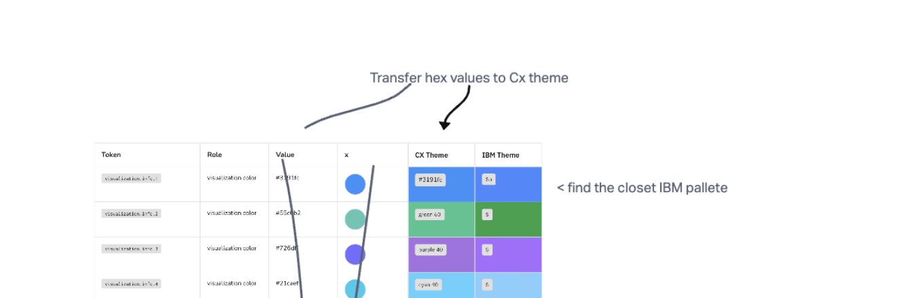
Token translation mapped source visualization roles toward IBM theme values.
03 · Illustration system
Build a visual method the team could extend.
I created most of the original product illustrations and reusable components, then partnered with the team to document and scale the method.
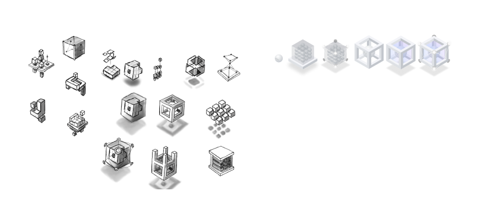
These sketches explore service metaphors and composition.
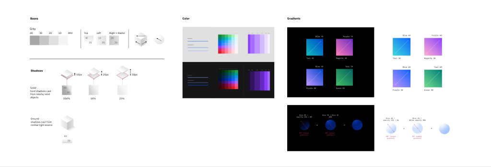
The foundations define shared rules for geometry, color, gradients, and lighting.
Five services, each shown in light and dark themes.
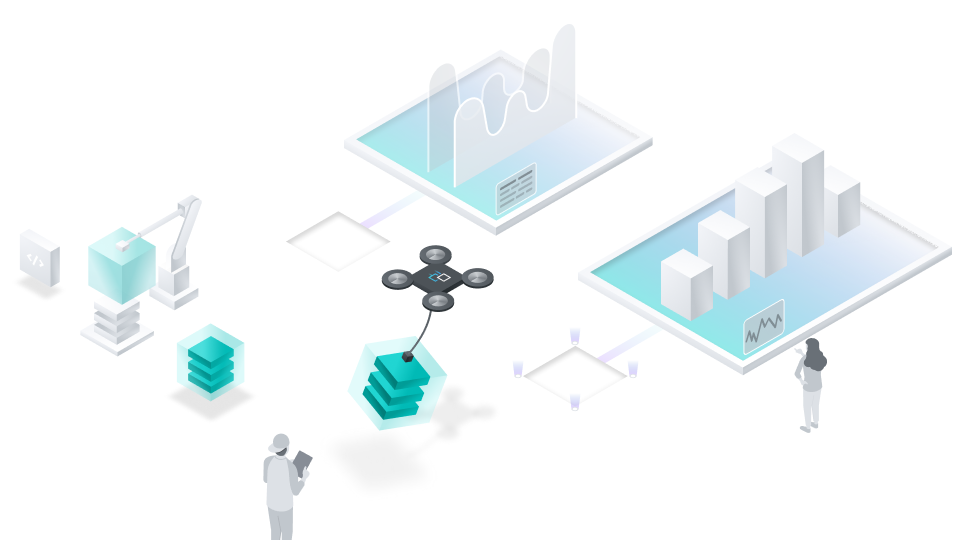
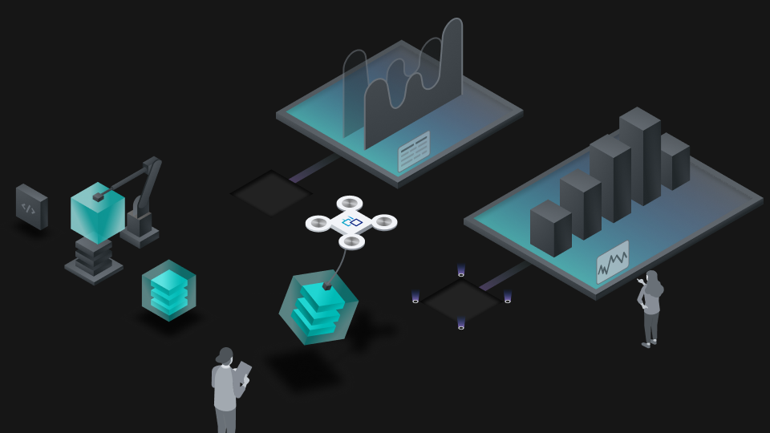
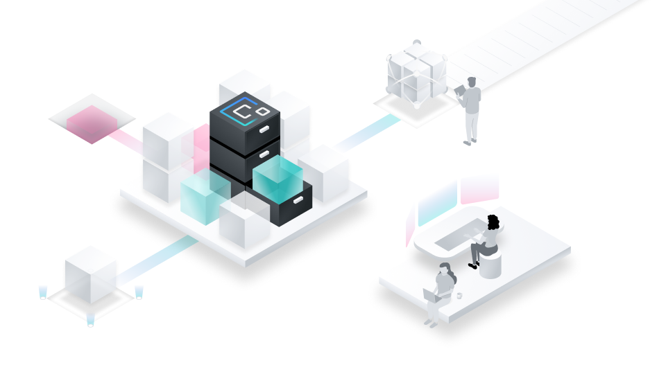
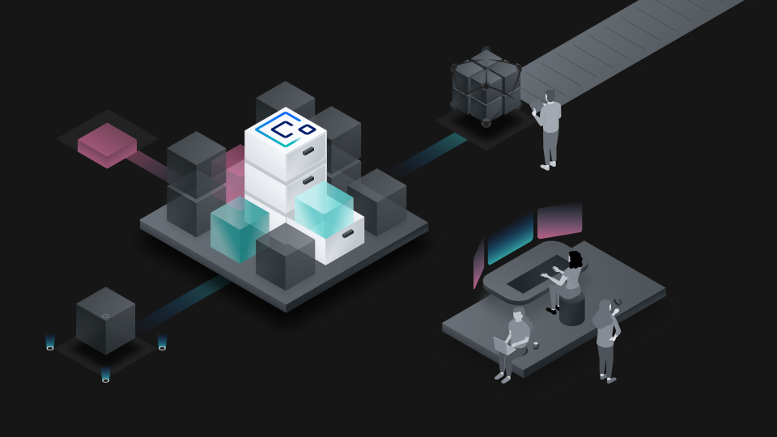
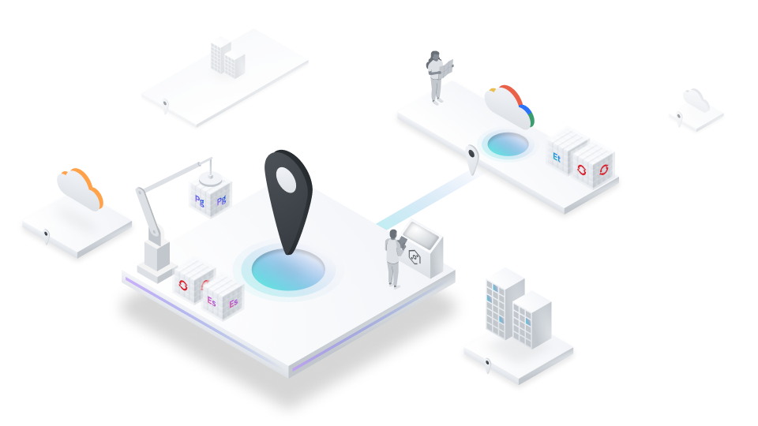
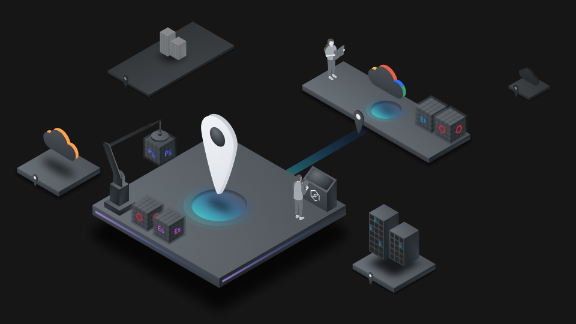
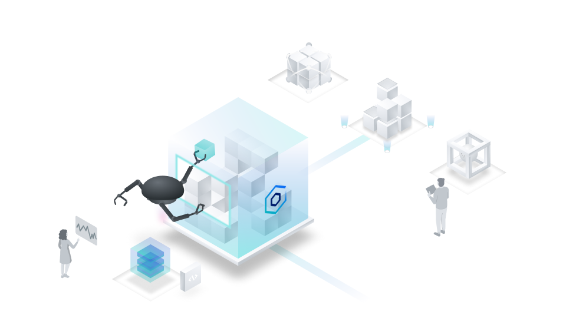
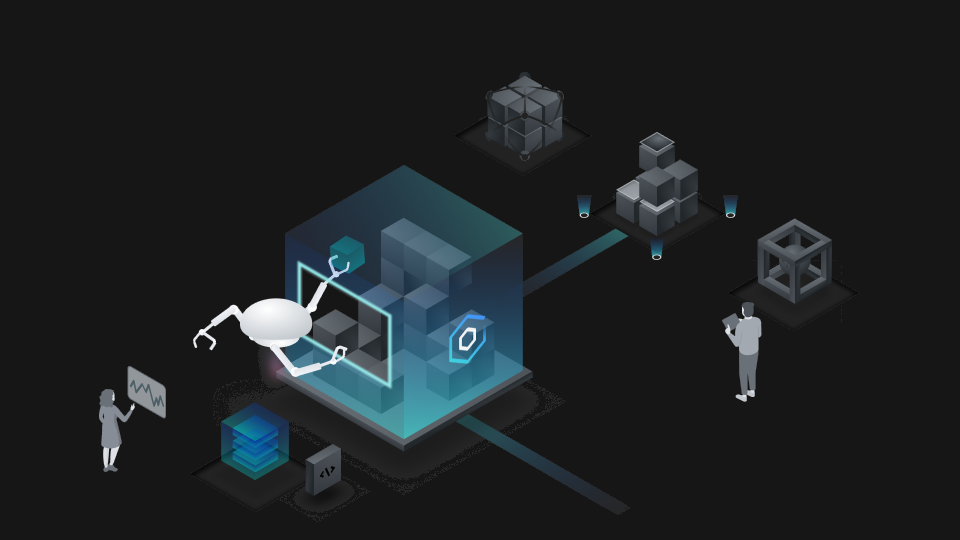
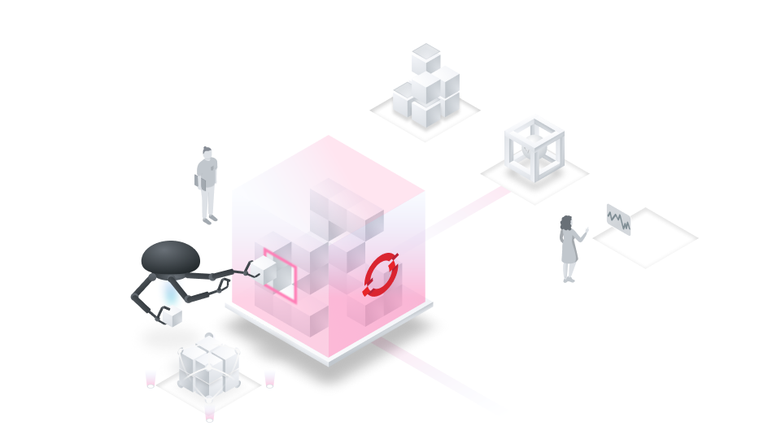
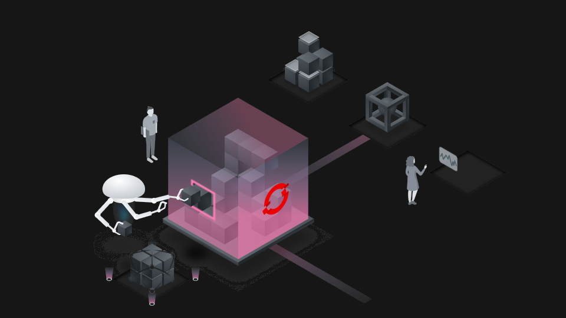
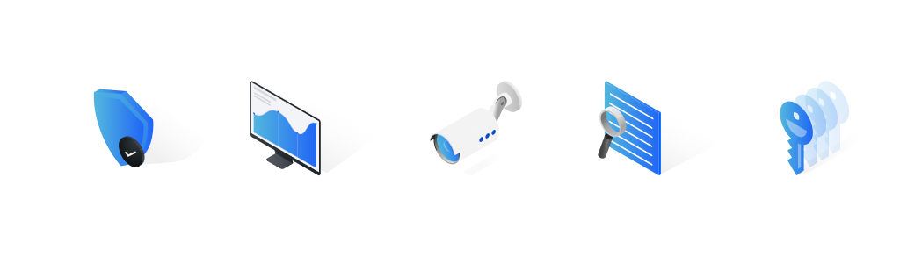
These service icons use the same geometry and color palette.